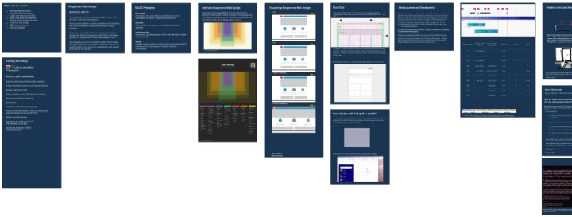

Enterprise wellness · 2021–2023 · UX Design Engineer
Virgin Pulse
Above: the Resize and Reflow training deck, 2022
One proof of concept became the layout standard for 300 engineers.
A Bank of America contract needed Section 508. I built a fluid-layout proof of concept that held up at 400% zoom, it became how every team built pages, and I trained more than 400 people across engineering, design and product to do the same.
Read the case study